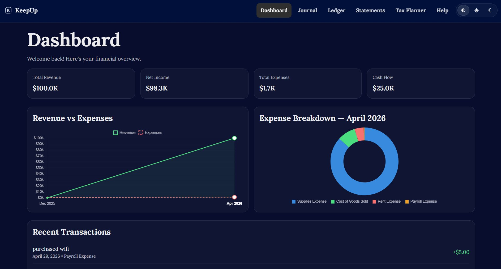

A Generic Page

For my Computer Science capstone class, my group and I decided to revitalize, re-work, and revamp JNJB Bookkeeping into a new app called KeepUp. With all of us having more experience in software engineering under our belts, old and new group members were able to efficiently design, build, and document a much more robust app over the course of the semester. With encouragement from faculty, we designed the app as an alternative to QuickBooks for small businesses.
KeepUp has a sophisticated login system, protecting user data by hosting it on an external server. Additionally, KeepUp allows for double-entry accounting through the general journal, keeps track of pre-existing and user generated accounts in a ledger, dynamically generates financial statements, estimates taxes for different business types based on user-inputted values, and graphs and charts important financial data for ease of analysis.